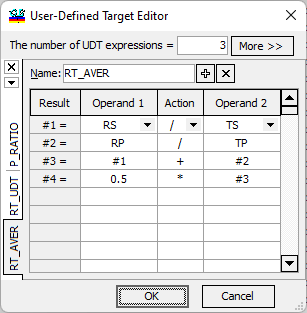

User-Defined Target Editor
User-Defined Target Editor
Navigation: OptiLayer Menu Commands > Data Menu > Target Editor >
User-Defined Target Editor
` <floating_constant_targets.html>`__ ` <target_editor.html>`__ ` <extended_argument_definition.html>`__

A User-Defined Target (UDT) in OptiLayer can be an arbitrary expression that includes all available elementary targets (such as RS, TS, etc.), constants, previously defined (intermediate) targets, and arithmetic operators. It can also involve elementary functions such as trigonometric functions (Sin(), Cos()), exponentials (Exp()), hyperbolic functions (Sh(), Ch(), Th()), and absolute value (Abs()). Additional functions were introduced in 2015:
Sqrt: square root
Cbrt: cubic root
Log: logarithm
Log10: base-10 logarithm
Tan: tangent
ASin: arcsin
ACos: arccos
ATan: arctan
Erf: error function
ASinh: hyperbolic arcsin
ACosh: hyperbolic arccos
ATanh: hyperbolic arctan
These functions enhance the flexibility and capability of defining user-specific targets with more advanced mathematical expressions.
 Note: Please exercise caution when using these
functions, as they may not be defined for all values of the
argument.
Note: Please exercise caution when using these
functions, as they may not be defined for all values of the
argument.
In the User-Defined Target (UDT) Editor, the UDT is constructed starting from the Result #1 row to the last Result row. For example, if the UDT Editor window defines the following target: UDT = 0.5 * (RS / TS + RP / TP) Once defined, the UDT can be used like any other OptiLayer target. If the current targets include a UDT target, the UDT Evaluation window can be used to plot the UDT target (under Analysis->UDT menu item).

Note: UDT Evaluation utilizes the UDT expressions defined in the currently loaded Target.
In the current version of OptiLayer, up to 32 different UDT expressions can be used. The number of UDTs can be adjusted using the “The number of UDT expressions” entry field at the top of the UDT Editor. To select a UDT for editing or inspection, you can use the tabs on the right side of the dialog or the drop-down list opened with the down-arrow button. To delete the current UDT, click the “x” button. To add a new UDT, use the “+” button in the dialog. Each UDT expression can be assigned its own name that is more descriptive than the default names UDT1, UDT2, and so on. Use the Name entry field to adjust the UDT names. These names will appear in the list of available targets in the current Target editor.
Clicking the More >> button opens the Extended Argument Definition Editor.